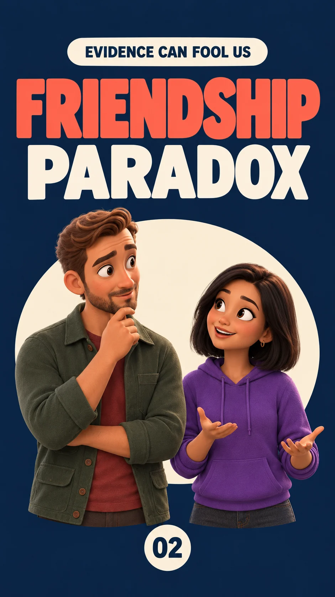

01HUMAN JUDGMENT
Confirmation Bias
Not started
Why do we notice evidence that agrees with us?
BIAS VIDEO SERIES
Ten short visual stories about judgment, data selection, scientific evidence, and the tools we use to think more clearly.
| Video | Name | Planning | Making | Finished |
|---|---|---|---|---|
| 01 | Confirmation Bias | Not started | Not started | — |
| 02 | Friendship Paradox | Approved | Complete | ✓ |
| 03 | Survivorship Bias | Approved | Through Scene 3 · Review | — |
| 04 | COVID Paradox: Competing Risks | Approved | Complete | ✓ |
| 05 | Regression to the Mean | Review pending | Scenes 1–6 of 8 · Review | — |
| 06 | Berkson’s Paradox | Not started | Not started | — |
| 07 | Publication Bias | Not started | Not started | — |
| 08 | Winner’s Curse | Not started | Not started | — |
| 09 | Funding Bias & Multiplicity | Approved | Scenes 1–4 of 7 · Assembled | — |
| 10 | Mitigating Bias | Not started | Not started | — |
EXPLORE THE SERIES
Why do we notice evidence that agrees with us?

Why do your friends seem to have more friends than you?
Who is missing from the success story?

Why can one outcome change the observed rate of another?
Why can someone improve with no treatment at all?
How can selection create a correlation?
Why are significant results overrepresented?
Why are “winning” effects often exaggerated?
How can many tests manufacture a trend?
What research-design tools reduce these problems?
ABOUT THE PROJECT
This evolving video series turns statistical ideas into short, visual explanations for curious viewers—no statistics background required.
CURRENT PROGRESS · REVIEW ONLY
This is a work-in-progress review assembly, not the finished video.